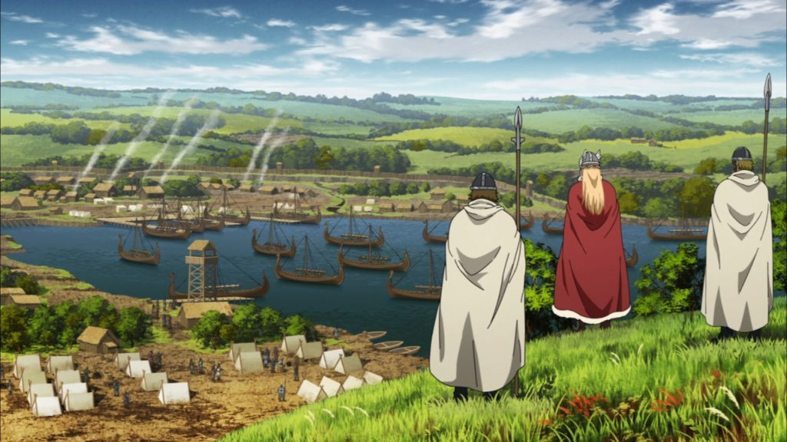
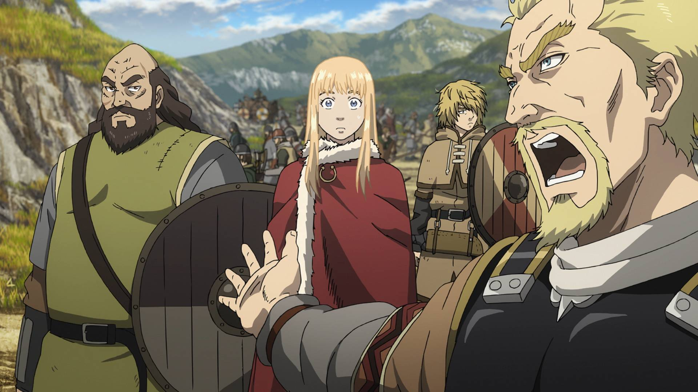
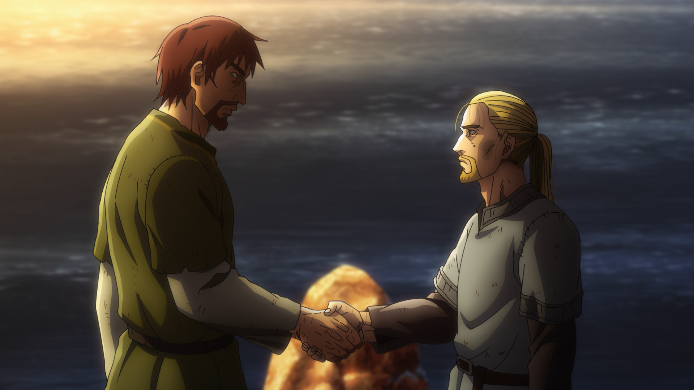

A adaptação em anime de Vinland Saga é reconhecida pela sua animação espetacular, trilha sonora emocionante e fidelidade à obra original. A série é dividida em duas temporadas, cada uma animada por um estúdio renomado.

A primeira temporada produzida pela WIT Studio contém 24 episódios. Ela conta sobre a infância de Thorfinn, a morte de seu pai Thors, sua entrada no bando de mercenários de Askeladd e os conflitos políticos para colocar o jovem Príncipe Canute no trono da Inglaterra.

A segunda temporada Produzida pelo Studio MAPPA contém 24 episódios. Ela apresenta uma mudança radical no tom da série. Vendido como escravo na Dinamarca, um Thorfinn traumatizado conhece Einar, aprende a trabalhar na terra e inicia seu caminho de pacifismo e regeneração espiritual.

© Projeto de front-end acadêmico de Tiago Almeida de Abreu baseado no mangá e anime de Makoto Yukimura. Todos os direitos reservados aos estúdios e autores originais.